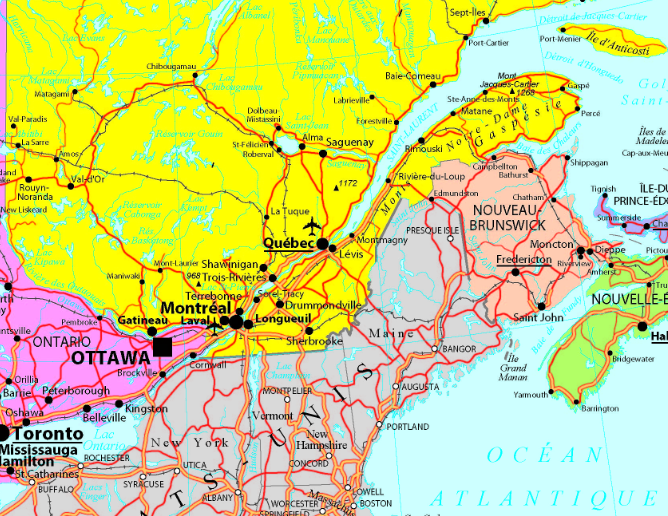

🚣 #80 — Les routes d'eau et les portages de Pierre le Fouineur
Carnets 1892-1921 · Deplacements sur l'eau et a terre
Demande de Jean-Claude : raconter les chemins de Pierre sur les voies navigables et sur les sentiers de portage, avec les dates et les details de parcours consultables au clic.
1) Parcours dates et passages
La carte a ete retiree sur demande (blocage reseau). Le detail reste ci-dessous avec les dates, les secteurs, le type de voie (eau/portage) et les notes de parcours.

2) Chronologie des segments de route
| Date | Secteur | Voie | Detail utile |
|---|---|---|---|
| 12 juin 1892 | Saguenay | Eau | Depart en canot, courant fort, cap maintenu rive sud. |
| 14 juin 1892 | Chute-Homme | Terre (portage 3,5 km) | Contournement de rapides, charge repartie en 2 voyages. |
| 20 juin 1892 | Chicoutimi | Eau + arrivee | Depot de fourrure et ravitaillement. |
| 08 juillet 1900 | Matapedia | Terre (portage 2 km) | Bancs de sable, canot soulage puis remis a l'eau. |
| 14 mai 1913 | Roc de la Grotte | Terre (portage 1,5 km) | Passage cote, pente raide, guidage a la perche. |
| 05 septembre 1921 | Saut du Diable | Terre (portage 2 km) | Chute estimee ~15 m, franchissement a pied sur roche humide. |
3) Ce que le parcours montre concretement
3.1 Eau = vitesse, terre = securite
Les carnets montrent une logique simple : avancer vite quand la riviere est lisible, sortir a terre des que le risque depasse le gain de temps.
3.2 Les portages sont aussi des lieux d'apprentissage
Pierre note les aides recues de familles innues, atikamekw et autres groupes rencontres : lecture des berges, choix des appuis, et savoir de saison sur l'etat des passages.
3.3 Chaque date est un point de decision
Les dates ne sont pas un decor : elles documentent les changements de strategie (debit, glace, charge, meteo) et expliquent pourquoi certains troncons sont faits en deux temps.
4) Extraits narratifs (carnet de route)
« Le Saguenay m'a pousse comme une bete vive ; j'ai serre la rive et compte les remous avant d'oser traverser. »
« Au Chute-Homme, pas d'heroisme inutile : on prend la terre, on porte, on revient chercher le reste. »
« Au Saut du Diable, le vacarme couvre les voix ; on avance en file et on pose le pied ou l'aine montre. »